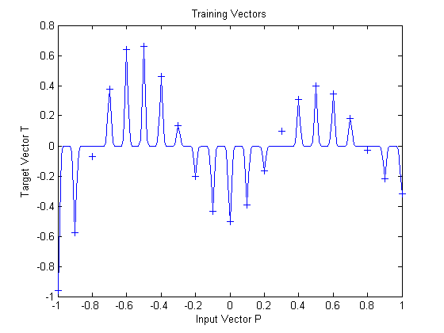

Radial Basis Underlapping Neurons
A radial basis network is trained to respond to specific inputs with target outputs. However, because the spread of the radial basis neurons is too low, the network requires many neurons.
Copyright 1992-2002 The MathWorks, Inc. $Revision: 1.14 $ $Date: 2002/03/29 19:36:05 $
Define 21 inputs P and associated targets T.
P = -1:.1:1; T = [-.9602 -.5770 -.0729 .3771 .6405 .6600 .4609 ... .1336 -.2013 -.4344 -.5000 -.3930 -.1647 .0988 ... .3072 .3960 .3449 .1816 -.0312 -.2189 -.3201]; plot(P,T,'+'); title('Training Vectors'); xlabel('Input Vector P'); ylabel('Target Vector T');

The function NEWRB quickly creates a radial basis network which approximates the function defined by P and T. In addition to the training set and targets, NEWRB takes two arguments, the sum-squared error goal and the spread constant. The spread of the radial basis neurons B is set to a very small number.
eg = 0.02; % sum-squared error goal sc = .01; % spread constant net = newrb(P,T,eg,sc);
NEWRB, neurons = 0, SSE = 2.758
To check that the network fits the function in a smooth way, define another set of test input vectors and simulate the network with these new inputs. Plot the results on the same graph as the training set. The test vectors reveal that the function has been overfit! The network could have done better with a higher spread constant.
X=-1:.01:1; Y=sim(net,X); hold on; plot(X,Y); hold off;